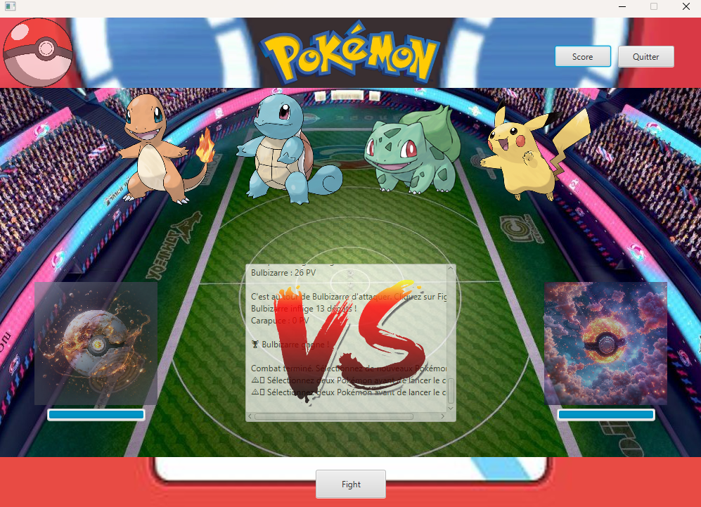
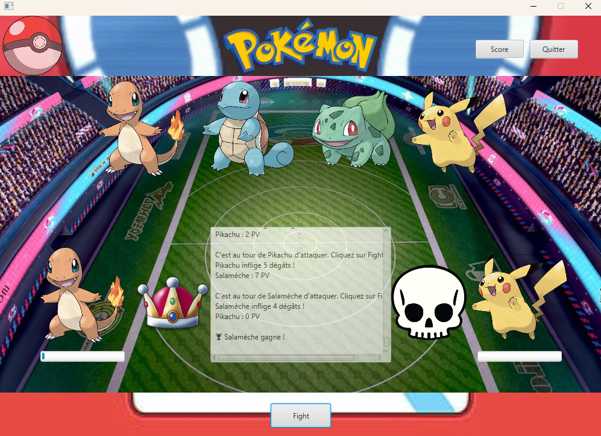

Mes projets

CastleFight Arena
Projet académique, BTS SIO SLAM
Jeu de combat en tour par tour développé en Java/JavaFX avec interface graphique moderne. Le joueur choisit un personnage parmi 4 disponibles et combat contre un adversaire contrôlé par l'ordinateur. Chaque attaque déclenche des animations, des effets visuels (tremblement d'écran) et met à jour les barres de vie en temps réel. Les scores sont sauvegardés en base de données pour garder un historique des performances.

Compétences développées (Tableau de synthèse) :
- ✅ Répondre aux incidents et demandes : Gestion des erreurs de jeu, validation des entrées utilisateur et prévention des crashes
Mes Films Préférés
Application web académique, BTS SIO
Application web permettant de découvrir et gérer ses films préférés grâce à une API externe. L'utilisateur peut rechercher des films, consulter les détails (synopsis, acteurs, notes), créer des listes personnelles et partager ses découvertes. Interface responsive avec système d'authentification utilisateur.
Compétences développées (Tableau de synthèse) :
- ✅ Répondre aux incidents et demandes : Gestion des erreurs API, validation des données utilisateur et traitement des réponses HTTP
- ✅ Organiser son développement professionnel : Recherche et intégration d'API tierce, apprentissage autonome des technologies web modernes

EventHub Lurcat
Application full-stack académique, BTS SIO SLAM
Application web complète de gestion d'événements pour établissements scolaires. Permet de réserver des salles, créer et gérer des événements, consulter les plannings, gérer les utilisateurs avec différents rôles (administrateur, professeur, élève). Interface moderne avec authentification, autorisations et système de notifications. Architecture MVC avec base de données PostgreSQL.


Compétences développées (Tableau de synthèse) :
- ✅ Gérer le patrimoine informatique : Administration de serveur applicatif, configuration base de données, déploiement et maintenance de l'application
- ✅ Répondre aux incidents et demandes : Debugging, résolution de bugs, optimisation des performances et gestion des erreurs
- ✅ Travailler en mode projet : Méthodologie agile, gestion de versions Git, collaboration en équipe, planning et livraison
- ✅ Mettre à disposition des utilisateurs un service : Interface utilisateur intuitive, documentation technique et utilisateur, formation des utilisateurs

Go FoodTruck Manager
Application mobile académique, BTS SIO
Application mobile de gestion des commandes pour food truck développée avec WinDev. Permet de gérer le catalogue de produits, prendre des commandes, suivre les ventes en temps réel et générer des rapports. Interface tactile optimisée pour utilisation en mobilité avec synchronisation des données.


Compétences développées (Tableau de synthèse) :
- ✅ Répondre aux incidents et demandes : Gestion des erreurs de synchronisation, validation des données et récupération d'erreurs
- ✅ Développer la présence en ligne : Application mobile connectée, interface moderne et expérience utilisateur fluide
- ✅ Mettre à disposition des utilisateurs un service : Application prête à l'emploi avec interface intuitive et fonctionnalités complètes
Module Gestion Clients Dolibarr
Stage professionnel - ILS, Mai-Juin 2025
Développement d'un module personnalisé pour Dolibarr (ERP open-source) permettant une gestion avancée des informations clients. Analyse des besoins métier, conception de la base de données, développement des interfaces utilisateur et intégration dans l'écosystème Dolibarr existant. Le module inclut la gestion des contacts, adresses, historique des interactions et génération de rapports.


Compétences développées (Tableau de synthèse) :
- ✅ Gérer le patrimoine informatique : Analyse et compréhension d'un système ERP existant, adaptation du code aux standards Dolibarr
- ✅ Répondre aux incidents et demandes : Debugging du code existant, résolution de conflits d'intégration, optimisation des performances
- ✅ Développer la présence en ligne : Extension des fonctionnalités web de l'ERP, amélioration de l'interface utilisateur
- ✅ Travailler en mode projet : Méthodologie de développement professionnel, respect des délais, documentation technique
- ✅ Mettre à disposition des utilisateurs un service : Formation des utilisateurs, documentation utilisateur, déploiement en production

Script Automatisation Achat Domaine OVH
Stage professionnel - LMWEB, Janvier-Février 2026
Développement d'un script Python en ligne de commande pour automatiser l'achat et la configuration de noms de domaine via l'API OVH. Le script gère la configuration des accès API, la recherche de domaines disponibles, la gestion du panier d'achat, la configuration des contacts propriétaires, des serveurs DNS et du paiement automatique. Interface interactive avec menu principal et sous-menus de configuration.


Compétences développées (Tableau de synthèse) :
- ✅ Gérer le patrimoine informatique : Configuration et sécurisation des accès API, gestion des clés d'authentification
- ✅ Répondre aux incidents et demandes : Gestion des erreurs API, retry logic, validation des réponses HTTP
- ✅ Développer la présence en ligne : Automatisation de services web, intégration d'API tierces pour services en ligne
- ✅ Travailler en mode projet : Analyse des besoins client, conception technique, développement itératif
- ✅ Mettre à disposition des utilisateurs un service : Script utilisable en production, documentation complète, interface utilisateur

Site Web Perpignan Transfert
Stage professionnel - LMWEB, Janvier-Février 2026
Création du site web vitrine pour l'entreprise Perpignan Transfert, spécialisée dans le transport VTC dans toute l'Occitanie. Site responsive incluant présentation des services, formulaire de contact, galerie photos, optimisation SEO et référencement local. Développement en collaboration avec l'équipe LMWEB selon les maquettes fournies.


Compétences développées (Tableau de synthèse) :
- ✅ Gérer le patrimoine informatique : Hébergement web, configuration serveur, maintenance du site
- ✅ Répondre aux incidents et demandes : Support technique, corrections de bugs, mises à jour de sécurité
- ✅ Développer la présence en ligne : Création de site web professionnel, optimisation pour les moteurs de recherche
- ✅ Travailler en mode projet : Gestion de projet web, respect des délais, coordination avec l'équipe
- ✅ Mettre à disposition des utilisateurs un service : Site accessible au public, interface intuitive, contenu informatif
Site Web SEE SELECOM Group
Stage professionnel - LMWEB, Janvier-Février 2026
Développement du site web institutionnel pour SEE SELECOM Group, entreprise spécialisée en télécommunications et réseaux en France et à l'international. Site multilingue présentant les services B2B/B2C, références clients, équipe, et formulaire de contact avancé. Intégration de maquettes Figma, optimisation des performances et référencement international.


Compétences développées (Tableau de synthèse) :
- ✅ Gérer le patrimoine informatique : Hébergement international, gestion de domaines multilingues, sécurité web
- ✅ Répondre aux incidents et demandes : Support client technique, maintenance corrective, évolutions fonctionnelles
- ✅ Développer la présence en ligne : Stratégie de présence digitale internationale, optimisation SEO multilingue
- ✅ Travailler en mode projet : Méthodologie de projet web professionnel, gestion des livrables, validation client
- ✅ Mettre à disposition des utilisateurs un service : Site web opérationnel, contenu B2B/B2C, accessibilité internationale